Project 02 / 07
BALYAN
Manufacturing workshop and exhibition area
- Type
- Building survey and refunctioning
- Location
- Büyük Yeni Han, Eminönü, Istanbul
- Term
- 2024–2025 Fall

Overview
A historic adaptive reuse project for the Balyan silver workshop in Büyük Yeni Han, Istanbul, still run by its master craftsman Yeprem Usta.
Improper interventions made to the structure were removed. The first floor became an exhibition space for silver works; the second floor was redesigned as a more modern and comfortable production workshop.
Büyük Yeni Han was built in 1764 in Eminönü, among the structures surrounding the Grand Bazaar. Silver craftsmanship is reported to have moved into the han in the 1980s.
- Type
- Building survey and refunctioning
- Location
- Büyük Yeni Han, Eminönü, Istanbul
- Term
- 2024–2025 Fall
Concept
Preserve the historic character; introduce a contemporary function.
- 01
Exhibition area
Silver works are exhibited and presented on a digital screen.
- 02
Private idea area
A room requested by Master Yeprem, where new stories are created for the works.
- 03
Manufacturing area
Casting, forming, high-heat and polishing benches for silver production.

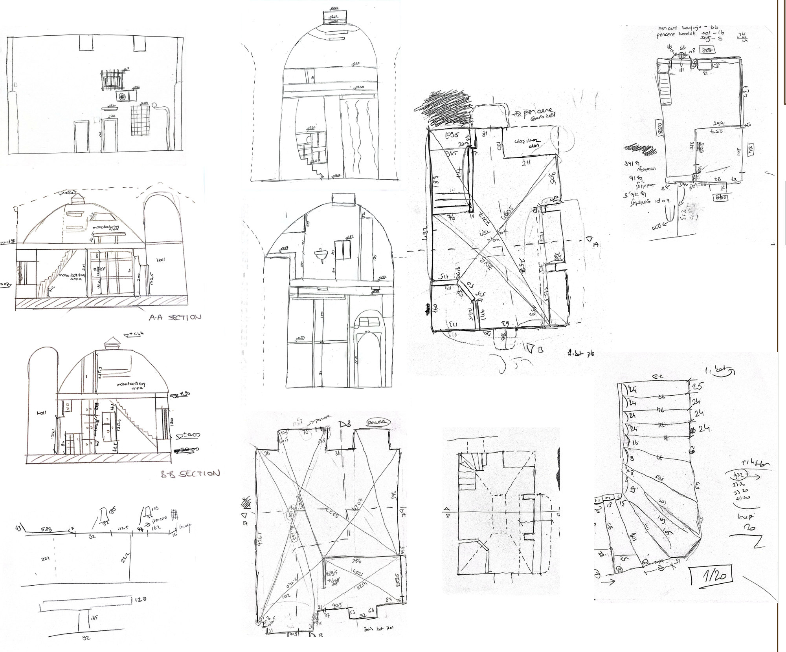
Inspect
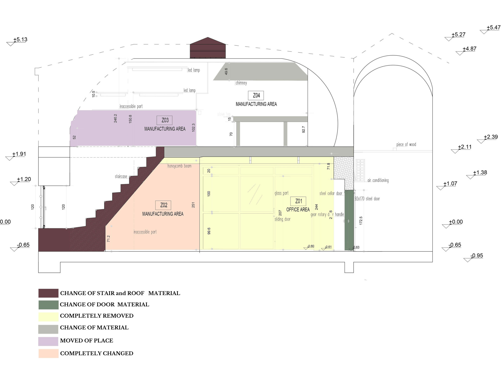
InspectPlans

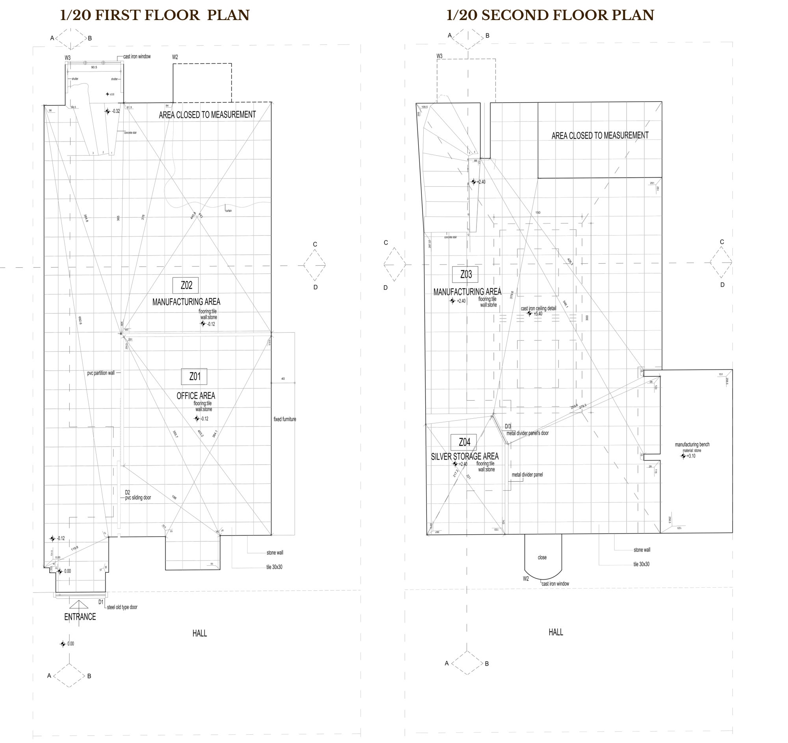
Inspect
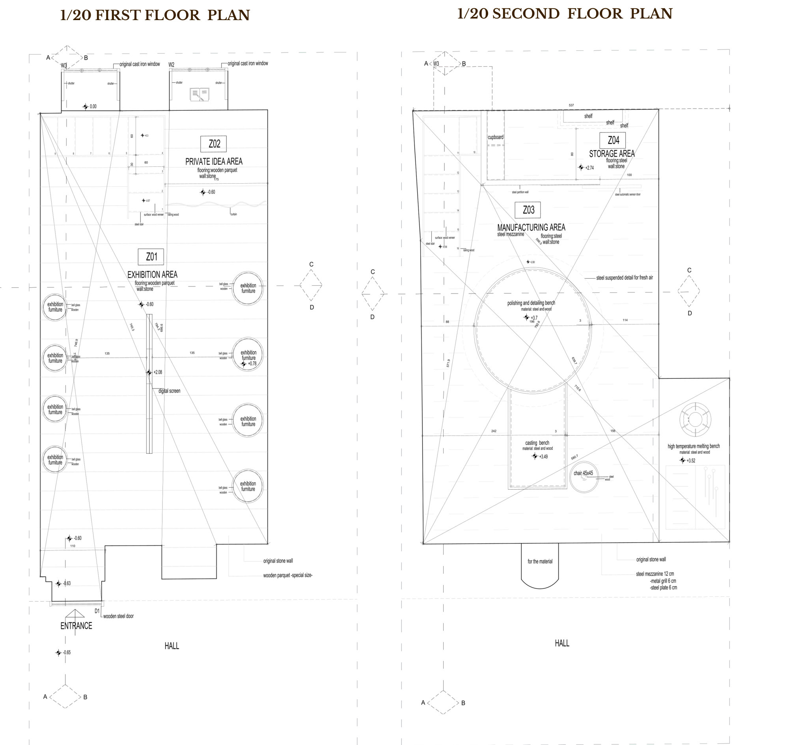
Inspect
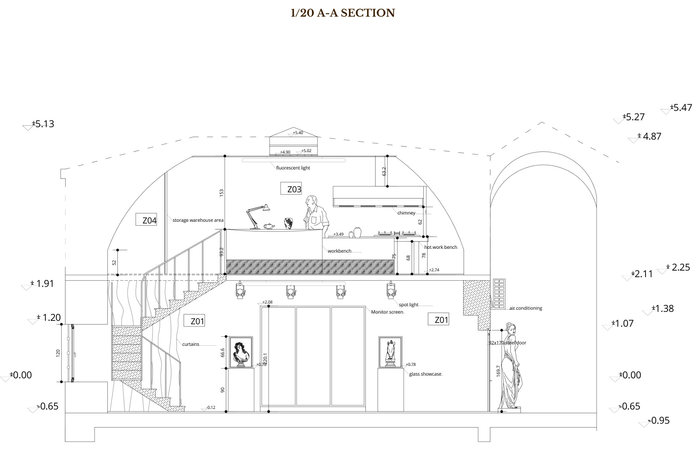
InspectSpaces
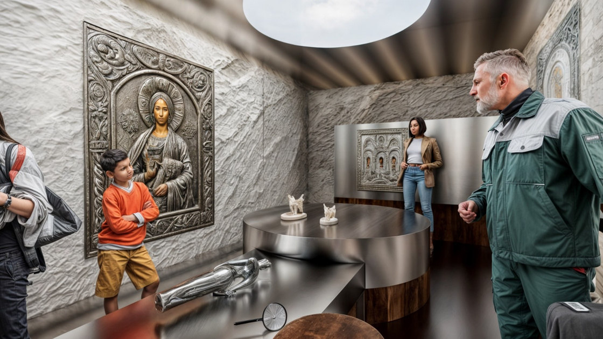
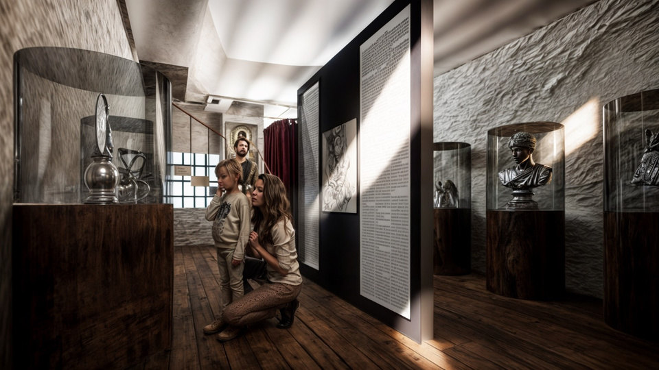

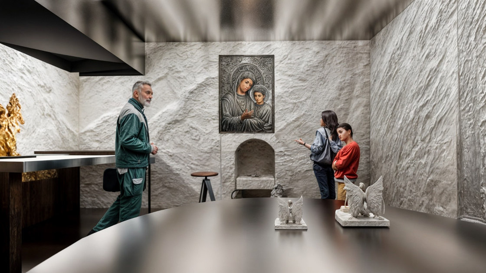
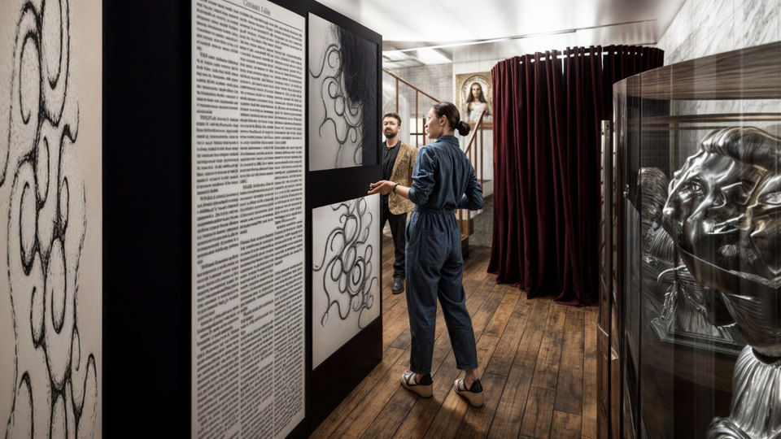
Details

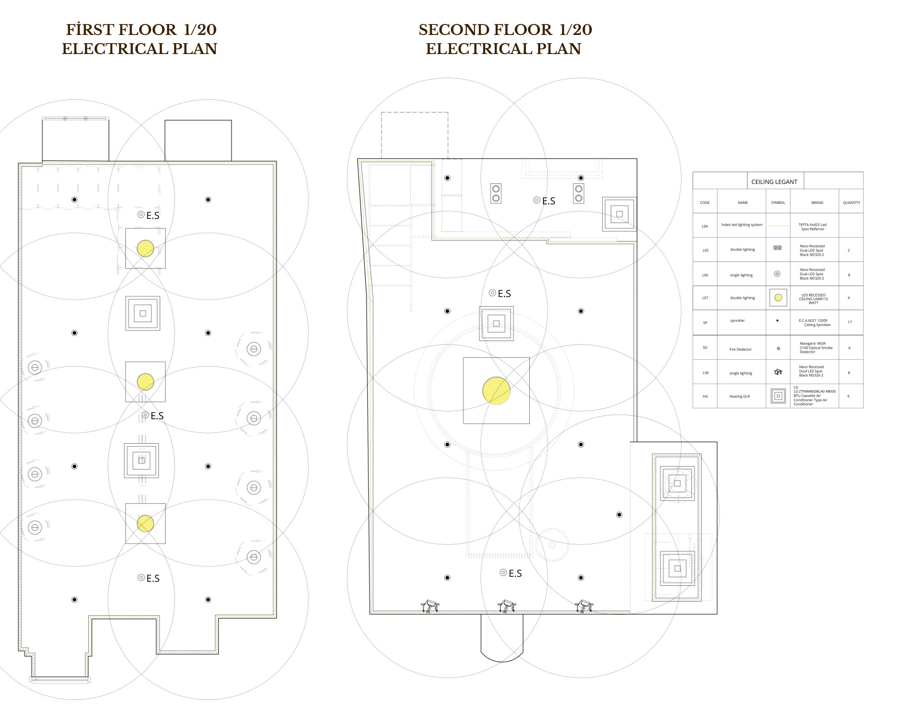
Inspect
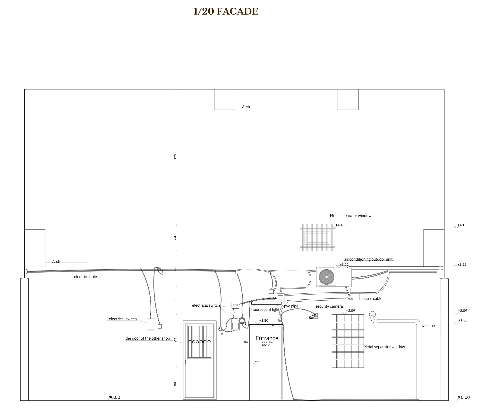
Inspect